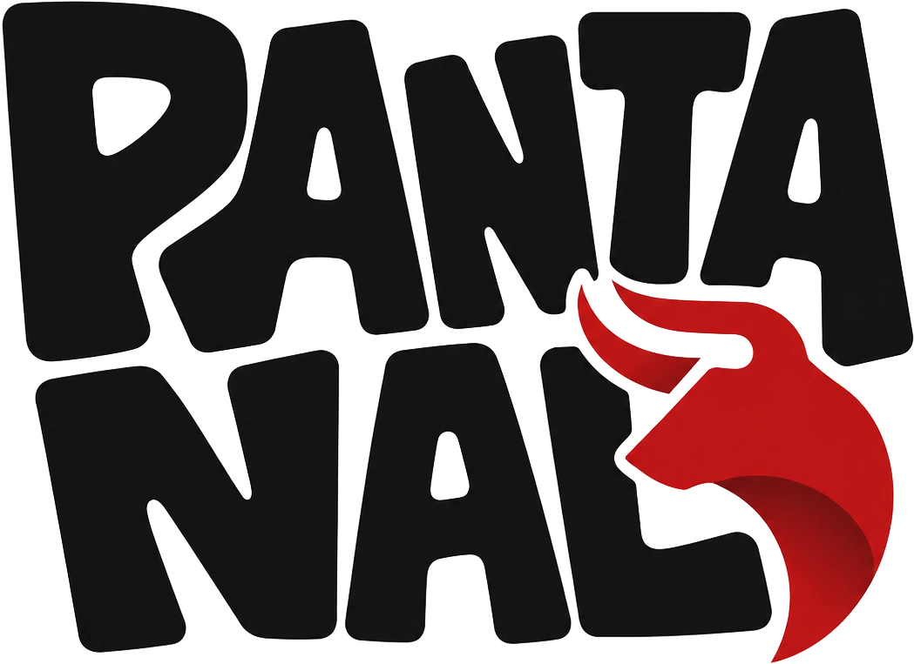

Da fibra colhida no mato ao império da fronteira. Este é o mapa da sua vida no Pantanal.
Cada fase destrava a próxima — as receitas foram desenhadas para que o que uma oficina consome, a anterior produz.
Nada aqui é estimativa: todos os dados desta apresentação foram extraídos das receitas e configurações reais do servidor.
O ano é 1494 — Mundus Novus, a era da pólvora primitiva. Você chega ao Pantanal sem nada além das próprias mãos. O mundo é realista e vivo: fome, sede, frio, cansaço e doença são reais. Tudo que existe — do pão ao canhão — foi produzido por jogadores.
Quase todo sistema do servidor é filho de dois sistemas-mãe:
Suas necessidades, sua saúde e seu primeiro craft. O ponto de partida de todo personagem.
A base econômica: plantação, rancho, oficinas, indústrias e exportação.
Domine os dois — e você domina o jogo.
| Necessidade | Comportamento | Se você ignorar |
|---|---|---|
| 🍖 Fome | Cai com o tempo — correr acelera 5× o gasto | Perde stamina e vida |
| 💧 Sede | Cai 2× mais rápido que a fome | Zerada, drena vida 5× mais rápido — sede mata |
| 😰 Estresse | Sobe em situações tensas | Debuffs de desempenho |
| 😴 Sono | Precisa dormir de verdade | Penalidades físicas |
| 🛁 Sujeira | Acumula com o trabalho | Precisa se lavar |
| 🚬 Vício | Fumar/beber demais | Abstinência |
| 🌡️ Temperatura | Frio congela, calor desidrata | Vista-se para o clima |
Seu cavalo também tem necessidades. Comandos: /hud (ajustar ícones) · /hudof (ocultar/mostrar).
| A regra | Se você ignorar |
|---|---|
| 💧 Água de rio crua | Pode te deixar doente — ferva na fogueira antes de beber |
| 🍖 Comida estraga | Item vencido = risco de intoxicação; chá curativo resolve enjoos |
| 🦠 Doenças são reais | Cólera, tuberculose, difteria — cada uma com cura própria |
| 🩸 Ferimento tem consequência | Cabeça = tontura; braço ruim não segura arma |
| 🐍 Peçonhentos envenenam | Ande sempre com antídoto no bolso |
Tudo que ela vende, você produz mais barato. Ela destrava a cadeia — não sustenta ninguém. Quem compra tudo financia quem produz.
Seu primeiro dia. Aprenda a não morrer — e a construir as ferramentas que destravam todo o resto.
Beba e encha o cantil em rios e fontes. Água crua = risco de doença — ferva na fogueira: a fervida dá +5 de sede e +5 de stamina a mais que a crua. Cantis se desgastam com o uso.
Cace e cozinhe: carne + espeto = refeição simples; carne + erva = temperada, bem melhor. Ensopados na panela restauram tudo (minigame: Adicionar [E] / Misturar [G]).
Para cozinhar você precisa estar com a faca equipada. Sem faca, sem panela.
Alterne Adicionar (E) e Misturar (G) por 4 passos. Errar mais de 2 vezes = preparo falha.
| Ameaça | Como se defende |
|---|---|
| 🦠 Doenças | Cólera, tuberculose, difteria — remédio próprio para cada |
| 🩹 Ferimentos | Sangramento pede bandagem; fratura e infecção pedem médico |
| 🐍 Veneno | Cobras e afins — antídoto no bolso é vida |
🩺 Médicos: jogadores de plantão ou o consultório NPC — sente na cadeira e seja examinado. 🩸 /bloodtype mostra o seu tipo (importa em transfusões).
A farmácia nativa do Pantanal — curas poderosas que você mesmo produz na Bancada de Ervas: moe_mbae, moe_rasy_guasu, chás e antídotos. É o seu remédio quando não há médico por perto.
Todas as três podem matar: drenam vida, sede e fome sem parar até você se tratar. A febre evolui em 3 níveis — no último você mal anda, não escala e não pega itens.
| Doença | Como pega | O que faz com você | Cura |
|---|---|---|---|
| 🦠 Cólera | Água crua, comida estragada | Diarreia grave e desidratação — a sede despenca | Cama de médico + moe_rasy_guasu (Bancada de Ervas) — ou consultório NPC por $100 |
| 🫁 Tuberculose | Contato e friagem | Tosse constante, perda de força — stamina drena mais rápido | |
| 🤒 Difteria | Contato com doentes | Febre alta e garganta fechada |
Usar máscara reduz o risco de contágio da cólera. Roupa certa também evita a febre de chuva (hipotermia): chapéu e botas em dia de chuva fria — se pegar, moe_mbae ou chá curativo resolvem.
Picada de cobra não é doença — é veneno: mata muito mais rápido. Cura: antídoto de cobra ou moe_mbae. Ande sempre com um dos dois no alforje.
Os 3 níveis de febre: 1 anda devagar e visão embaça · 2 não escala e não pega itens · 3 quase parado, cambaleia como bêbado. Não deixe chegar no 3.
É a ferramenta exigida para craftar as outras e plantar suas bancadas: Estendal de Secagem, Bancada Sobrevivente, Bancada de Ervas e Fogueira própria. Nunca fique sem um. E é a mesma chave que, lá na frente, inicia a Ferraria e o Artesanato — o único freio da produção é o metal (ferro fraco + cobre), nunca a ferramenta. Sem gargalo.
Tudo aqui é feito na própria mão, sem bancada nenhuma. É o único craft disponível no minuto zero — e é dele que saem as suas primeiras oficinas plantáveis.
A cadeia da fogueira, item por item. O Martelo Construtor é a chave: sem ele, nenhuma ferramenta de pedra e nenhuma estação existem.
| Também sai da mão | Exemplos |
|---|---|
| Cozinha | 33 carnes temperadas, 15 simples, 4 ensopados, café |
| Cavalo | Horse Medicine, kit de reparo |
Com toras + corda + o Martelo você monta e planta no chão — são elas que abrem o resto do jogo:
A fogueira não é só o primeiro craft — é uma oficina inteira que você carrega no bolso. Direto da lista de itens do script:
| Categoria | Quantos | O que é |
|---|---|---|
| 🍖 Carnes temperadas | 33 | 11 tipos de carne × 3 ervas (orégano, tomilho, hortelã) — de Big Game a Prime Beef |
| 🥩 Carnes simples | 15 | Todas as carnes assadas no espeto, do peixe ao boi — mais o café |
| 🏹 Flechas especiais | 5 | Fogo, dinamite, veneno, melhorada e caça miúda |
| 💥 Munição especial | 10+ | Balas explosivas (revólver, pistola, rifle, escopeta), split point (4 tipos), incendiária, facas de arremesso melhorada/veneno |
| 🧪 Tônicos | 7 | Potent/Special Bitters, Miracle Tonic, Health Cure, Snake Oil |
| 🐴 Cavalo | 6 | Horse Medicine, Reviver e Stimulant nas versões Potent e Special |
| 🎯 Iscas de caça | 4 | Predador e herbívoro, normal e potente — atraem até lendários |
⚠️ Munição explosiva e flechas de dinamite na fogueira do acampamento — o vaqueiro esperto crafta longe da cidade. Tônicos Special > Potent: exigem ervas mais raras.
As matérias-primas movem o Pantanal — e quem as coleta nunca passa fome. Escolha 1 ou 2 atividades e domine.
Nascem em zonas do mapa (Eagle Eye ajuda). Dão fibra vegetal (1º craft) + ~25 ervas. Venda no Herbalista, aceite missões.
O machado desgasta e quebra; cada árvore tem cooldown de 60s.
Cada rocha leva 1–3 golpes; a picareta também quebra.
Ferro + carvão viram lingotes na Ferraria (Fase 4) — o começo de toda a metalurgia. O sal mineral (raro) alimenta o Fermentador.
Cace e esfole (prompt na carcaça). Cada animal dá carne + partes (pele, garra, dente, chifre, gordura animal). O Açougueiro compra peles, carcaças e partes — e dá XP de caçador.
Vara + iscas: cada isca atrai espécies diferentes (pão/milho → bagre; queijo → perca; minhoca → variados). Minigame de molinete. Venda na Peixaria Ribeirinha.
Não existe pescaria de sorte: cada isca chama espécies específicas. Escolha a isca pelo peixe que você quer — e pelo bolso.
| Isca | Onde funciona | O que morde |
|---|---|---|
| 🍞 Pão / 🌽 Milho | Pântano e sul | Bagre-cabeçudo, pickerel, bluegill — e o raro Pintado Gigante |
| 🧀 Queijo | Lagoas e rios calmos | Bluegill, rock bass, pickerel |
| 🪱 Minhoca | Norte a sul (multiuso) | Bluegill, perca, redfin, rock bass, smallmouth bass |
| 🦗 Grilo | Rios do norte | Smallmouth bass, truta, redfin, perca |
| 🦞 Lagostim | Pântanos e lagoas do sul | Largemouth bass, bagres — e o esturjão de lago |
| 🪰 Libélula | Águas do norte | Truta, salmão, pike, perca |
| 🧲 Metálica pequena | Rios e lagoas médias | Multiuso: bass, salmão, truta, perca |
| 🧲 Metálica lendária | Norte e pântano | Os maiores predadores: pike, esturjão, catfish gigante |
| ⭐ Lendária universal | Tudo | Todas as espécies raras e grandes do mapa |
Peixes têm porte P / M / G — os G são material de receita rara: o Pintado Gigante entra na Base Culinária de New Austin (Fase 7).
| Item | Preço | XP |
|---|---|---|
| Carnes comuns (fibrosa, caça, ave, peixe, réptil) | $3,00 | 2 |
| Carnes médias (porco, carneiro, crustáceo, ave gorda) | $3,50 | 3 |
| Carnes nobres (caça grande, veado maduro, ave exótica) | $4,50 | 4 |
| Boi Prime (a melhor carne crua) | $5,50 | 5 |
| Peles pequenas (coelho, guaxinim, cobra, tatu…) | $4,00 | 1 |
| Garras comuns (urso, raposa, puma) | $2,00–2,50 | 1 |
| Garras lendárias | $7,00 | 2 |
A mesma pele paga 20% (ruim), 50% (boa) ou 100% (perfeita) do valor. Tiro limpo na cabeça + arma certa pro porte = pele perfeita, o quíntuplo da estragada.
Corte processado vale 2–3× a carne crua: Picanha $12, Costela de Veado $11, Lagosta $10, Lombo Suíno $9,50 — é isso que o módulo Freezer (Fase 5) destrava.
Vender no açougue dá XP de caçador — nível alto abre melhores oportunidades de caça.
Caderno + binóculos → estude cada animal a 100%. Depois, Rifle Varmint + tranquilizante: o bicho dorme e você colhe o sangue (/coletaranimal) sem precisar matar. É o que destrava os lendários diários.
Manadas de 20–40 surgem em zonas do mapa. Conduza com G até o comprador — paga $ + itens. Também alimenta o rancho.
Por pistas (Eagle Eye, em horários certos) ou por isca. As partes craftam itens únicos. /legendary_compendium.
Cada cabeça entregue paga na hora — e ainda derruba itens:
| Animal | $/cabeça | Drops ao entregar |
|---|---|---|
| 🐄 Vaca | $5 | carne (sempre) · couro 50% · leite 10% |
| 🐃 Touro | $7 | chifre (sempre) · sêmen de Boi Marruá 50% · couro 50% |
Manada de 20–40 cabeças = $100–280 por condução — mais o material genético que vale ouro no rancho.
14 espécies × 3 variantes: ursos (e Ursos Espirituais), lobos, panteras, pumas, alces, bisões, javalis, jacarés, coiotes, raposas, carneiros, castores, cervos… Cada um com horário e território próprios.
Dois modos de missão: com isca (atrai) ou por pistas (rastreia). Partes lendárias craftam itens únicos e valem $7 a garra no açougue.
| Você tem | Venda em |
|---|---|
| Ervas | Loja do Herbalista |
| Peles / carcaças / partes | Açougueiro |
| Peixe | Peixaria Ribeirinha |
| Gado conduzido | Comprador de gado |
| Algodão / trigo / milho | Depósito do Moinho |
| Estudos e sangue | Instrutor Naturalista |
O coração de tudo. Três núcleos dão vida e identidade à propriedade: a casa, o rancho e a plantação.
Moradia, storage, chaves & acesso, guarda-roupa e mobília (/minhacasa). Upgrades por nível com kits da Marcenaria. E até 100 plantas protegidas dentro de casa.
Animais com XP (nv 0→10, até 1,9× mais produto), cochos, remédio e carinho. O cocô vira fertilizante.
Solo, 26+ sementes, irrigação (balde → regador → carroça d'água), clima e pragas. Qualidade = cuidado.
| Núcleo escala com o tier | Tier 1 — início | Tier 5 — máximo |
|---|---|---|
| 🏡 Casa | Moradia | Grande Casa Senhorial (via Mansão Rural) |
| 🐄 Rancho | Rancho Inicial | Rancho Imperial |
| 🌱 Plantação | Horta Básica | Plantação Máxima |
O tier da fazenda (1→5) define o tamanho de cada um dos três núcleos.
Enxada → marcar terreno → preparar → plantar semente → regar / fertilizar / cuidar / tirar praga → colher. Clima e temperatura importam. A qualidade da colheita reflete o seu cuidado.
Água: abaixo de 40% a planta definha; calor gasta mais; chuva rega de graça. Fertilizante: comum (+10) ou grande (+50) — o melhor é o cocô do rancho. Pragas: 15% de chance; espantalho reduz. Frio atrasa o crescimento.
No começo, compre sementes e ração nas lojas. Depois produza no Zelador — muito mais barato.
⚠️ As três últimas são cultivo ilegal — rota do submundo (Destilaria & Bar, Fase 5). Plante por sua conta e risco.
Qualidade não é sorte — é uma conta. A planta nasce com 100% de qualidade e cada descuido desconta. Na colheita, a faixa de qualidade define quantos itens saem da mesma planta:
Chuva rega de graça (weatherAffect). Ciclo típico: ~300 min de crescimento em 4 estágios visíveis.
Água ou fertilizante abaixo de 40% → a planta definha 4%/tick. Cada 1% de praga come 0,3% de qualidade e 1% de saúde. Planta malcuidada (<20%) despenca 3%/tick.
| Qualidade na colheita | Exemplo: cholla | Exemplo: lúpulo |
|---|---|---|
| ⭐ 80–100% | 30 unidades | 5 |
| 🟢 50–80% | 22 | 3 |
| 🟡 25–50% | 12 | 2 |
| 🔴 0–25% | 1 unidade | 1 |
Balde (10 usos) → Regador (16 usos, respinga em 3 plantas) → carroça d'água. Até 100 plantas protegidas dentro de casa — fora, é por conta e risco.
A mesma planta pode render 30× mais bem cuidada do que largada. Cuidar é literalmente dinheiro.
Compre/alugue (/fazenda) — aluguel cobrado a cada 7 dias, pré-pague até 4 semanas. Encha cochos, dê remédio e carinho; colete produto com clique esquerdo (minigame). Armazém próprio de 500 de capacidade.
Satisfação paga: a limpeza do cocô rende de 1 fertilizante (animal a 5%) até 4 fertilizantes (a 90%+). Animal feliz aduba sua plantação.
| Animal | Compra | Rebanho | Produz (fêmea · macho) |
|---|---|---|---|
| 🐄 Bovinos | $5.400 | até 20 | Leite · sêmen de raça |
| 🐔 Aves | $100 | até 8 | Ovos · pena de voo |
| 🐑 Ovinos | $200 | até 8 | Lã · couro de ovelha |
| 🐐 Caprinos | $300 | até 8 | Leite de cabra · gordura |
| 🐎 Equinos | $500 | até 8 | Progesterona · testosterona (hormônios!) |
| 🐖 Suínos | $135 | até 8 | Carne de porco · gordura — e vende por $490 |
Preços direto do config do rancho. O suíno é o melhor flip do começo: compra $135, vende $490 adulto. Os hormônios equinos alimentam a Oficina Regional de New Hanover (Fase 7).
Compre sementes e ração; plante trigo, milho e maçã; comece com uma galinha; reinvista até o loop girar sozinho e barato.
Nascimento assistido (prompt G, kit especial) e inseminação (sêmen fraco/médio/forte).
/estacao lista os IDs · /trabalhar <id> executa · /marcarlocal e /resetarlocal posicionam.
A matéria-prima vira produto — e o produto vira fortuna. A ordem abaixo não é sugestão: cada oficina consome o que a anterior produz.
+ Coureiro (13 receitas + 19 mochilas).
Colocável na fazenda ou fixa no mapa, sempre com um livro de receitas.
Produção em tempo real (até 10 pedidos na fila) e com chance de falha.
Receitas exigem nível; craftar dá XP e sobe a oficina.
Cada fazenda tem 1 tier; Tier 5 = todos os itens. Saint Denis é urbana à parte.
A sequência das oficinas nos próximos slides sai do grafo de dependências real: o que uma consome, outra produz.
| Oficina base | Transforma em |
|---|---|
| 4.1 🌾 Secagem | Colheitas e peles → secos · 3 versões (pequeno · médio · grande) |
| 4.2 ⚙️ Prensa | Secos → farinhas, pó de café, açúcar, algodão · a grande é alugável |
| 4.3 ⚒️ Ferreiro módulo | Forja (minério+carvão → lingotes) + Ferramentas (→ ferramentas de metal) |
| 4.4 🪵 Artesanato módulo | Primários (→ componentes, vidro, tecidos) + Produtos (→ sacos, kits) |
Ferreiro e Artesanato são profissões duplas: 1 profissão = 2 oficinas — uma trabalha o material, a outra cria o produto.
Cada fazenda tem 1 tier dessas oficinas. Tier 5 = todos os itens.
Lingotes: Ferro Fraco (inicia tudo!) → Ferro → Aço → Cobre. E ainda:
Cabeças de ferramenta: rastelo, enxada, pá, machado, picareta, martelos — a Oficina 2 monta o cabo.
Da lida diária à infraestrutura pesada:
E as peças grandes: Bomba de Água, Poço Artesiano, Oficina Fermentador, Alambique Inicial — e o Alambique Ilegal.
Progressão por tier: a Forja abre com 23 receitas no tier 1 e chega a 30 no tier 5; Ferramentas vai de 9 → 29. O molde de lingote você compra 1× na loja — depois produz o seu.
Todo componente intermediário do jogo:
É esta oficina que fabrica as outras: Bancada do Sobrevivente, Oficina do Zelador, Bancada de Ervas, Estrado de Secagem, Prensa Manual, Oficina do Lenhador, Couro & Costura, Importação & Exportação, Manipulador Genético e a Destilaria 1.
Sua fazenda literalmente constrói a si mesma: quase toda bancada colocável sai do livro de Produtos. Progressão: 11 receitas (t1) → 31+ (t5).
| Oficina | O que produz |
|---|---|
| 4.5 🧺 Zelador | 9 trigo + 3 feno + 9 sacos → 9 rações · fecha o loop do rancho |
| 4.6 🧀 Fermentador | Leite/soja → queijo, óleo, água filtrada, vinagre |
| 4.7 🌿 Bancada de Ervas | Ervas + frascos → remédios Mbaraeté e itens do xamã |
Forno / Forja Industrial e Cozinha Rara são PvP. O Artesanato Especial é bancada urbana (Saint Denis). A fazenda produz; a cidade e o PvP refinam.
Ração comum + ração grande + remédio para cada uma das 6 espécies (gado, galinha, ovelha, cabra, cavalo, porco). E ainda:
A ração veterinária de gado vale 16× a comum no cocho (80 vs 5 de comida).
O óleo vegetal é insumo de metade das oficinas — inclusive das Regionais (Fase 7).
As curas das 3 doenças da Fase 1 saem daqui — a fazenda que tem Ervas nunca implora por médico.
| Oficina VIP | O que produz |
|---|---|
| 4.8 🪚 Marcenaria | Toras + pregos → tábuas, vigas, kits exige Ferreiro |
| 4.9 🎒 Coureiro | Couros + tecidos → mochilas (mais carga = tudo escala) |
| 4.10 🍲 Cozinha | Farinhas + ovos + carnes → os melhores pratos |
| 4.11 🧬 Criogenia | Sêmen + kits de inseminação → melhoramento genético |
| 4.12 📮 Ensacamento | Produção → sacas de 30 kg · o maior livro (152 receitas) |
| 4.13 🐂 Procriador | Sêmen fraco → sêmen de raça; sobe a linhagem |
| 4.14 🦫 Armação de Couro | Job-locked. Pele → couro refinado |
| 4.15 🍺 Destilaria & Bar módulo | Moonshine, premium e explosivos → ver slide do módulo |
| 4.16 🏕️ Estandarte módulo | Sede do clã, estoque → entregas → ver slide do módulo |
A fazenda escolhe quais VIP montar — mais opções de produção (e de risco).
Sem Ferreiro, sem Marcenaria. As VIP dependem das bases — por isso vêm depois delas.
Cada quilo a mais de carga multiplica todo o resto do jogo: mais colheita por viagem, mais minério, mais caixas. A linha completa do Coureiro:
| Linha | Mochilas |
|---|---|
| 📏 Progressão | Trapo → Pequena → Média → Grande |
| ⚒️ De profissão | Lenhador · Minerador · Pescador · Agricultor · Fazendeiro |
| 🪶 Indígenas | Sobrevivência Indígena · Nativo Especial · Indígena Especial |
| 🩺 Médicas | Médica I e II |
| 🎖️ Especiais | Militar · Caçador de Tesouros · Não Descobertas I/II/III (segredos) |
Antes das mochilas, o Coureiro produz os componentes: fitas, cordas e painéis de couro P/M/G, tecidos de lã e algodão. É a mesma matéria dos Primários do Artesanato — quem tem os dois nunca para.
A de profissão certa turbina a sua atividade: a do Lenhador carrega mais tora, a do Pescador mais peixe. As "Não Descobertas" são receitas-mistério — ninguém no servidor sabe todas.
A melhor comida do jogo sai daqui — buffs maiores que qualquer carne de fogueira. E ela consome a fazenda inteira: farinha, ovo, leite, queijo, carne e açúcar.
| Categoria | Pratos |
|---|---|
| 🥖 Massas & pães | Massa de Pão · de Pizza · de Bolo · Bolo de Soja · Pão de Queijo · Pão de Bacon · Pão de Presunto |
| 🍕 Pizzas | Queijo · Presunto · Bacon |
| 🍖 Pratos do Pantanal | Tatu Assado · Rabo de Jacaré com Tomate · Bife de Picanha e Queijo · Pamonha · Caldo do Caçador · Sopa de Alce com Pão |
| 💪 Os poderosos | Marmita Poderosa e Suco Poderoso — o combo de buff máximo do jogo |
| 🥤 Bebidas | Café · Chá Curativo · Limonada Elizabeth · Suco de Groselha do Deserto · Suco Framboesa Misterioso · Suco Dourado · Vinho de Baixa Qualidade |
| 🐕 Para os bichos | Ração para Pets · Leite para Pet |
Fora da fazenda existe a Cozinha Rara (8 receitas) — mas ela é PvP, não conte com ela para o dia a dia.
Sistemas pagos que abrem camadas inteiras de gameplay — cada um com sua própria economia. Ainda não é a indústria: é a especialização que vem logo depois das oficinas.
175+ cavalos, doma de selvagens, ferraduras (+status), cruza em 16h. Dinheiro: criação e venda.
🚂12 locomotivas ($7 mil–286 mil), carvão oleoso + água, 4 upgrades. Dinheiro: frete pesado.
⛵Pesca de rede em 14 embarcações. Raros por região: esturjão, tubarão, mapa do tesouro.
📦$0,50/item, carreira em 5 níveis, Licença de Tradesman (nv 3) → carroça própria de até 14 caixas.
🧊77 carcaças → cortes nobres p/ açougue e Cozinha. Repare (mín. 50%); o dono pode cobrar uso.
🍺Moonshine ilegal: reputação, entregas, denúncia — xerifes podem queimar o bar.
⚔️Grafite marca território → buffs (pickpocket passivo, NPCs aliados, resistência) + 6 missões/dia.
🏕️Base do clã: estoque → entregas com títulos. Preço: raids, imposto $5 mil/mês, mín. 5 membros.
Pago como as oficinas VIP, mas é um script inteiro — camada nova de gameplay e renda. Cada módulo tem seu slide a seguir → (e página completa em modulos/).
| Módulo | Custo de entrada | De onde vem o dinheiro | Risco / exigência |
|---|---|---|---|
| 🐴 Estábulo | $0 — doma de selvagens | Domar e revender; criação (cruza 16h, fertilidade rara); carroças $600–2.200 | Cavalo envelhece (~0,5 ano/dia) e morre aos ~30 |
| 📦 Entregador | $0 — só pegar caixa | $0,50/item × 30 por caixa; nv 3 = Licença Tradesman + carroça própria; nv 5 = até 14 caixas | Não entregou = perde metade (XP −50) |
| 🧊 Freezer | Equipamento na fazenda | 77 carcaças → cortes que valem 2–3× (Picanha $12); dono cobra taxa de uso | Trava abaixo de 50% — repare com martelo + parafusos |
| ⛵ Barcos | Canoa barata → navio | Pesca de rede (cooldown 5 min): volume + raridades (esturjão, tubarão, mapa do tesouro) | Carvão: 1 item = 20 de combustível — sem carvão, jangada |
| 🍺 Destilaria & Bar | Alambique (craft próprio) | Moonshine, bar clandestino, entregas ao submundo | Ilegal: fumaça visível, denúncias, xerife queima o bar |
| 🚂 Trens | $7.000 → $286.000 | Frete pesado (baú = dezenas de carroças), linha de passageiros; revenda a 60% | Exige licença ferroviária; caldeira superaquece >90% |
| ⚔️ Dominium | Clã formado | Pickpocket passivo em território, 6 missões/dia, buffs | PvP territorial por natureza |
| 🏕️ Estandarte | $5.000/mês + 5 membros | Estoque → entregas → títulos de exportação | Sua fazenda vira alvo de raid |
Ordem recomendada de investimento p/ logística: Entregador → Barcos → Trens. Renda passiva leve: Estábulo → Freezer. Adrenalina: Destilaria → Dominium + Estandarte.
Cavalo aqui não é montaria — é um ativo que nasce, envelhece e morre. Há 175+ à venda, mas o selvagem que você laça custa zero: domar e revender é a renda de quem chegou ao Pantanal sem um tostão.
Cruzar leva 16 h — mas quase nenhum cavalo nasce fértil. A chance de pegar um reprodutor cai a cada elo da cadeia:
BreederFix / FemaleFix destravam a reprodução.
| O que mexe no cavalo | Regra |
|---|---|
| Ferradura | +3 status por nível (máx. 2). Desgasta — o melhor upgrade por dólar. |
| Idade | Envelhece ~0,5 ano/dia; mortal aos ~30. Deprecia como bem. |
| Vender | Loja, mercado negro ou P2P. Transferir: $450. |
| Comandos | /dv deleta · /mudarc montaria · /treinadorc |
Peles e carcaças no lombo alimentam o Freezer. Carroças ($600–2.200) são o motor do Entregador. O estábulo é o eixo, não a ponta.
Carroça carrega caixas; trem carrega um império. O módulo mais caro e mais "empresa" do servidor — frota própria, uma caldeira de verdade pra domar e frete que substitui dezenas de carroças de uma vez.
| Faixa da frota | Preço |
|---|---|
| Entrada Locomotive | $7.000 |
| Trabalho SAE · CUR · Coal | $15–26 mil |
| Pesado Bayou · SAE Luxury | $86–96 mil |
| Elite Cornwall · Pacific Union | $286.000 |
Revenda devolve 60% do valor (com upgrades). Apreendido no pátio? Resgate por $20. Upgrades em 4 níveis: baú 20 slots → +velocidade 30 → caldeira tolerante → tender +100.
A caldeira é real: carvão oleoso + água, com o foguista queimando 1–5 pás a cada 30–60 s. Passe de 90% da velocidade e ela superaquece e apaga — reacenda no espaço. Tender guarda 200 de carvão (N carrega 10). Agulhas nas setas, apito no mouse, horários em J.
Exige licença ferroviária — não é livre. E nunca saia sem água: caldeira seca é frete morto no meio do nada.
Terra tem limite; a água não. Das 14 embarcações que pescam de rede, o barco a remo mais barato já se paga sozinho — e cada corpo d'água esconde uma fauna diferente, até o mapa do tesouro.
| Cada água, um peixe | O que puxa |
|---|---|
| Flat Iron Lake | Peixe de volume p/ venda e Cozinha |
| Pântano de Lemoyne | Espécies próprias da região |
| Águas de Guarma | Fauna tropical rara |
| Águas distantes | Raros esturjão, tubarão, baleia · 🗺️ tesouro |
A rede lança do convés com 5 min de cooldown por lançada. A fauna também muda com o horário.
Cada carvão vale 20 de combustível. Seca no meio do lago e o barco vira jangada — só reabastece em terra. Compra com ESPAÇO, escolhe com I, chama os seus com G.
Comece com o barco a remo mais barato que aceite rede. As primeiras redes bancam o upgrade — depois é só perseguir os raros.
A profissão que não precisa de fazenda: pega a caixa na loja, carrega na mão, entrega de carroça. Simples — mas a carreira em 5 níveis decide quantas caixas cabem por viagem, e é aí que mora o dinheiro.
| Nível | O que destrava | Carga |
|---|---|---|
| 1–2 | Carroça alugada do NPC | base |
| 3 | Licença de Tradesman carroça própria (com seu nome) | 6–10 caixas |
| 5 | chuckwagon / gatchuck | 14 caixas |
Cada frete concluído = +30 XP. Uma caixa junta até 30 itens a $0,50 cada (cheia ≈ $15), carregada e descarregada na mão.
Rota cheia > rota rápida. Alugue do NPC até o nível 3; a carroça própria maior é o seu teto de renda — mesma estrada, mais dólares. Sinergia direta com o Estábulo.
−50 XP e você paga metade do frete do próprio bolso. É o freio anti-abuso — e frete valioso também atrai olhares na estrada.
O elo que transforma carcaça em margem. Sozinho ele não vende nada — mas é ele que pega o bisão inteiro do seu lombo e o parte em cortes que o açougue e a Cozinha pagam caro.
Viram filé, carne curada, moída, costelinha… e todo corte processado vale mais que a carne crua. Os melhores pratos do jogo exigem corte nobre — o cozinheiro compra sempre.
Toda ação gasta. Abaixo de 50% ele trava — repare com martelo + 5 parafusos (da Ferraria). Faça aos 60% pra não travar no meio de um lote grande.
O dono pode cobrar taxa de uso de caçadores sem módulo. Caça grande primeiro — mais valor por viagem.
Um bar por jogador, dois alambiques e a reputação que separa o contrabandista amador do dono do pedaço. Renda alta — e o único módulo em que o xerife pode queimar tudo.
| Alambique | O que destila |
|---|---|
| Artesanal still01 | Do básico ao Moonshine de Sangue — a qualidade sobe por nível |
| Química still02 | Destilados premium, explosivos e munições · livro do bar em lote ×11 |
Cada alambique tem 10 níveis de XP. Vender: comprador NPC liberado por reputação → /bar chama a carroça → dinheiro cai no cofre (equipe por ID).
Fumaça visível denuncia o ponto · 30% de chance de denúncia · dinamite pode explodir o alambique · e o xerife incendeia o bar inteiro. Suba reputação com entregas pequenas antes de crescer.
Grafite não é vandalismo — é bandeira. Marque os pontos com lata de tinta e a área vira sua, destravando buffs de facção que só ligam de verdade quando a família sobe de nível.
| Nível | Buff da família |
|---|---|
| Nv 1 | Mestre do Roubo — seus NPCs furtam jogadores de passagem; o líder saca o caixa |
| Nv 5 | Reforços NPC (aliados seguem) + Domínio Territorial (mapa dos pontos) |
| Nv 10 | Resistência da Família — membros mais duros em território dominado |
/dominio abre o painel · o líder fixa o ponto com /setgangmenu · /delgraffiti apaga a marca inimiga. Baú da família incluso.
As diárias e especiais vão de recados a sabotar telégrafos — é o combustível que sobe o nível da família.
Domine onde a família já circula e corra pro nível 5 — é quando os buffs pesam. Faz par natural com o Estandarte.
Plante o estandarte e nasce a base do clã: até 100 estruturas, cozinha coletiva e uma linha que converte estoque em títulos de exportação. Poder de verdade — com imposto de verdade.
Materiais entram no estoque a cada 30 min; as entregas pagam títulos de exportação por lote:
Ensopados coletivos (Arroz Carreteiro, Caldo do Inverno Serrano…) que dão buff para o grupo inteiro. A base ainda cabe baús, tendas e barril — até 100 estruturas.
Com 5+ online: 10 min de defesa → 5 min de lockpick → 10 min de loot. Cooldown de ~3 dias. /familiacon convida · /moverfamilia realoca ($800).
Só plante com a família cheia (5+ ativos). Entrega de 100 com escolta. Faz par com o Dominium.
Você já produz. Agora vai empregar, ser empregado ou empreender — e se mover pelo Pantanal como gente grande.
Duas firmas com chefe (que contratam por cargo) e um ofício solo — três formas de ganhar a vida sem fazenda própria.
Chefe compra a firma e contrata por cargos. Ferramentas com durabilidade e afiação; árvores de qualidade 20–100%; coleta de resina e missões de entrega.
Firma com chefe, contratos e armazéns. Mineração industrial. /minerhat (só contratados).
Pegue caixas nas lojas (30 itens, ~$0,50/item) e entregue de carroça — que cresce por nível. Não entregou = perde metade. No módulo dedicado, sobe até 14 caixas por viagem.
Ferramenta profissional tem durabilidade E afiação (100/100). O machado de lenhador perde 1 de durabilidade e 2 de afiação por corte; abaixo de 30, cada golpe tem 1 chance em 5 de quebrar. Afie antes.
Qualidade da árvore varia de 20 a 100% — o olho do lenhador é salário. + coleta de resina e missões de entrega.
Firma com chefe, contratos e armazéns. A mina de Annesburg se expande visualmente em 2 fases conforme a firma trabalha (o mapa muda!). Entregas oficiais da mineração + /minerhat (o capacete, só contratados).
O chefe compra a firma e contrata por cargos; cada contrato de trabalhador expira em 20 dias — renove ou perca o emprego. Armazéns têm permissão por cargo: quem pode pegar, quem pode guardar.
Carreira do Entregador: XP +30 por entrega, −50 por falha · nível 3 = Licença de Tradesman (carroça própria, 6 caixas) · nível 4-5 = carroças grandes (supply/chuck, até 14).
A geografia vira estratégia: cada estado processa o comum em premium — e o topo (T5) só existe porque fazendas, regiões e profissões cooperam.
/moinhoInstalação $2.000; upgrades (nível+1)×$500 até o nível 5. Dono define preços e pagamentos. Trabalhar (aberto a todos): colha nos campos públicos e deposite — pago na hora:
Motor desgasta (repare) e estábulo suja (limpar consome trigo).
/tabacoNegócio de $3.000, mesmo modelo do moinho. Pagamento por produto processado:
Lemoyne é a capital do tabaco — os produtos regionais de lá valem mais.
Cada estado é uma vocação produtiva exclusiva. O mesmo padrão se repete nos cinco: bens comuns entram e saem como premium que só existe ali — e vale mais na exportação.
Todas as linhas de produção de cada estado, direto do código. Cada linha corre nos 3 tiers; Lemoyne é a mais completa (5 linhas), mas os outros quatro já têm especialidade própria e implementada.
| Estado | Oficina | Linhas de produção (T1 · T3 · T5) | Especialidade |
|---|---|---|---|
| Lemoyne | 🐂 Bovinos | Pecuária · Tabaco · Comidas Raras · Bebidas Raras · Agrícolas | Agricultura · Culinária · Pecuária farinhas premium, Café de Saint Denis + tabaco (charuto) |
| West Elizabeth | 🐖 Suínos | Pecuária · Comidas Raras · Itens Estratégicos | Madeireira · Construção · Fortes madeira, resina e borracha → arado, irrigação e estação de trabalho |
| New Hanover | 🐎 Equinos | Pecuária · Comidas Raras | Combustível · Veículo · Cavalo hormônio + ervas + trigo → Ácido Orgânico → Hormônio Negro (veterinária equina; petroleira e carroças em expansão) |
| Ambarino | 🐑 Ovinos | Pecuária · Comidas Raras | Caça · Curtume · Couro couro cru + linha de algodão → Luva Especial → Luva Esterilizada |
| New Austin | 🐐 Caprinos | Pecuária · Comidas Raras | Mineração · Metalurgia · Química minério de ouro + areia fina → Barra de Ouro Mexicana → Recipiente de Ouro (metalurgia e química destilada em expansão) |
O T5 é cooperativo: reúne itens de expansão e sistemas centrais que consomem saídas de várias oficinas — ex.: o Arado de West Elizabeth exige caixas de ferro, aço, cobre, cedro e tijolo. Carros-chefe: Essência do Pantanal · Hormônio Negro · Botelha Térmica · Luva Esterilizada · Recipiente de Ouro.
| Estado | T1 — a base | T3 — a caixa | T5 — o premium |
|---|---|---|---|
| Lemoyne | Óleo Vegetal + Salvia + Soja + Botella de Vidro → Óleo de Soja | Óleo de Soja + Álcool Puro + Caixa Pequena | 🏆 Essência do Pantanal |
| New Hanover | Hormônio Progesterona + Mil-Folhas + Trigo + Botella → Ácido Orgânico | Ácido Orgânico + Álcool Puro + Caixa Pequena | 🏆 Hormônio Negro |
| West Elizabeth | Tábua de Cedro + Resina + Milho → Tampa Térmica | Tampa Térmica + Borracha + Álcool + Caixa | 🏆 Botelha Térmica |
| Ambarino | Couro Cru + Linha de Algodão + Agulha + Óleo Vegetal → Luva Especial | Luva Especial + Couro Ref. Médio + Álcool + Caixa | 🏆 Luva Esterilizada |
| New Austin | Minério de Ouro + Areia Fina + Molde de Lingote + Óleo Vegetal → Barra de Ouro Mexicana | Barra de Ouro + Grampo de Forja + Álcool + Caixa | 🏆 Recipiente de Ouro |
TODO produto T5 consome as 5 caixas T3 — uma de cada estado. Ninguém faz um premium sozinho: quem quer a Essência do Pantanal precisa do ouro de New Austin, do couro de Ambarino, da madeira de West Elizabeth e do hormônio de New Hanover. É o mapa inteiro cooperando à força.
Além da Pecuária, cada estado tem a linha Comidas Raras (base culinária regional: ervas locais + peixe raro da região) — e Lemoyne soma Tabaco, Bebidas Raras e Agrícolas (17 receitas no T5).
O endgame do rancho: transformar animais comuns em linhagens lendárias — não se compra, se cria.
Insumos vêm das oficinas da Fase 4: garrafas de vidro e kits de inseminação (Artesanato de Produtos). A cadeia nunca se desliga.
| Linhagem | Raridade | Nível | Pureza | Chance |
|---|---|---|---|---|
| Fraco | Comum | 1 | 45% | 95% |
| Médio | Nobre | 3 | 70% | 90% |
| Forte | LENDÁRIA | 6 | 95% | 85% |
A Forja fica num ponto gelado do mapa — leve casaco. Cada transmutação leva tempo real e tem chance de sucesso (fila de até 3). Você sobe XP de geneticista (nível 1–10).
Cada transmutação na Forja dá XP. A escada: nível 1 abre a linhagem Fraca → nível 3 a Nobre → nível 6 a Lendária. Do 6 ao 10 é volume: mais fila, mais sucesso, mais mercadoria.
A genética nunca sai de graça: cada tentativa consome produção das oficinas da Fase 4.
Sêmen Forte insemina com 60% de chance (vs 10% do fraco). Animal de linhagem produz mais, cria melhor e o excedente vira mercadoria raríssima: sêmen de raça e crias lendárias são o item mais caro do mercado entre ranchos.
Cooldown de ~3h entre procedimentos no rancho, cruza de cavalos leva 16h, transmutações têm fila de 3. Genética é maratona — quem começa antes, domina o mercado.
Inseminação: kit + sêmen na fêmea (fraco 10% / médio 30% / forte 60%). Nascimento assistido: prompt G na cria (kit especial), cooldowns de ~3h.
Linhagens produzem mais e melhor. Sêmen forte e crias lendárias são mercadoria raríssima — os outros ranchos pagam caro.
| Categoria | Comandos |
|---|---|
| 🩸 Saúde | /hud · /hudof · /bloodtype · /mydeathcount |
| 🔥 Craft | /craftingmenu · demais bancadas por prompt (E) |
| 🌿 Coleta | /herbalist_map · /herbalistsaddle · /legendary_compendium · /coletaranimal |
| 🚜 Fazenda | /fazenda · /animal · /estacao · /trabalhar · /marcarlocal |
| 🧬 Genética | /procriador · /forja |
| 🏭 Negócios | /moinho · /tabaco · /minerhat |
| 🐴 Transporte | /dv |
| ⚔️ Clãs | /gang · /dominio · /checkmissions · /territorystatus |
Teclas: E interagir · ENTER lojas · G gado/nascimento/negócios · SPACE minerar/cortar · clique golpear · botão direito sangue.
Você atravessou as 8 fases. Mas o Pantanal continua: clãs, territórios, guerra, petróleo…
Bem-vindo de verdade ao Sistema das Fazendas.